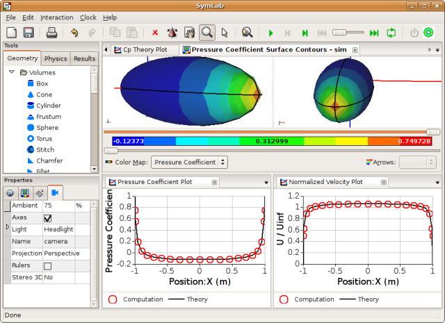

January 2008
Want to know how progress on our Linux version of Caedium is progressing? Then check out the Linux section below. Also with the start of a new year, we thought it a good moment to look back over our first year in business.
Linux
Our Linux version of Caedium and its add-ons is almost ready for release. During this effort, we also incorporated (into our Windows version too) a few enhancements to the main window layout - can you see what we did in the screenshot?
Multi-Pane Caedium on Linux
2007 in Review
The first milestone of 2007, and for Symscape as a whole, was the official release in February of Caedium and its add-ons:
- Builder - create and modify your own 2D and 3D NURBS based geometry designs
- Panel Flow - simulate gas (e.g. air) or liquid (e.g. water) flow around and through your designs
- Transient - explore time-dependent simulations and visualization of results
- Exchange - import and export standard geometry file formats
- Viz Export - export your 3D results to other visualization packages
- Professional - includes all add-ons in a convenient single installation
Our first series of releases marked the beginning of an affordable revolution in Computer-Aided Engineering (CAE) analysis tools.
From that first release in February through to the next major update in October 2007 (Caedium v1.1.0) we added significant new features (faceted geometry and geometry simplification) to our Builder and Exchange add-ons, both included in our Professional add-on. These enhancements were immediately and automatically available to everyone with a paid subscription or a current evaluation license.
In November Jeffrey Rowe wrote in Cadalyst an article focused on Symscape entitled Analysis for the Masses with CAE 2.0. The article highlighted the philosophy surrounding Caedium - our affordable CAE unified simulation environment.
Stay tuned for what is sure to be another exciting year in 2008.
Blog
Below are teasers for our latest blog posts. Click the titles to read the entire post.
Origins of the Commercial CFD Industry
Some may remember the 1980s for its over-the-top fashion (think big shoulder pads), even bigger hair styles, action movies (who can forget The Terminator?) and the Gordon Gekko greed is good mantra. Others will remember the introduction of personal computers - a "dent in the universe" to quote Steve Jobs of Apple. A few may even remember that the origins of the commercial Computational Fluid Dynamics (CFD) software industry can be traced to a small number of pioneers in the 1980s. If you are one of the few then maybe you'll find this post on the origins of commercial CFD will stir a few fond memories.
Turbulence to Skydiving: The 2007 Blog Review
2007 was quite a ride. Looking through my posts you'll find a veritable mystery tour from Turbulence to Skydiving Without a Parachute. Various themes emerged without warning - there was no master plan - I just went where the wind blew and the water ran.
Skydiving Without a Parachute
Jump out of an aircraft without a parachute - are you mad? Probably. What if you could have a reserve parachute and wear a wingsuit? OK, keep talking...
MicroISV Rising
The rise of the MicroISV - small (sometimes a single person) independent software vendor - might be the jolt that the Computer-Aided Engineering (CAE) analysis industry needs to break free of the current trend of ever more expensive tools offered by established CAE vendors. Just as the Google Lunar XPrize attempts to jumpstart a new outer space industry, MicroISVs have the potential to forge a brave new software frontier.
Feedback
Questions? Ideas? Problems?